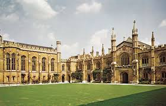
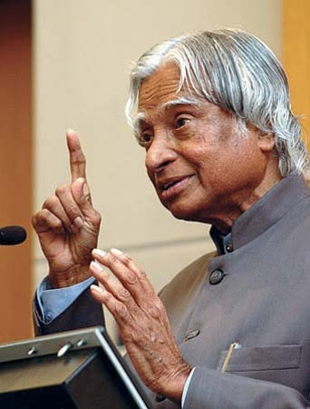

We, at DR. A.P.J. Abdul Kalam University allow a free and natural growth to ensure genuine development. The professors here are not taskmasters but helpers and guides. We believe that knowledge can be acquired through various sources; our job is just to train the young minds to gather it for themselves. The knowledge is there within and the teachers not only strive to show the child where it is and how it can be habituated to rise to the surface. We are aware that, we have to gradually steer the child from the stage of gathering information, to the stage of assimilation and finally take him to the final stage of utilization of that information. We consider the learning process to be complete when we know that the new information acquired by our learner has been so well integrated that he can utilize it and apply it in any new situation.
About A.P.J. Abdul Kalam
A.P.J. Abdul Kalam was known as the Missile Man of India for his important role in the nation's civilian space programme and military missile development. Also, in 1998, he made significant contributions to India's Pokhran-II nuclear tests. Do you know that A.P.J Abdul Kalam began his career as a scientist at the Aeronautical Development Establishment of the Defence Research and Development Organization (DRDO)? He had also served as the project director of India's first Satellite Launch Vehicle (SLV-III) at ISRO. In the 1990s he had served as the Chief Scientific Adviser to the Prime Minister before becoming the President of India in 2002. Now, let us study about Dr. A.P.J Abdul Kalam in detail through this article. Dr. A.P.J Abdul Kalam was born on 15 October, 1931 to a Tamil Muslim family in Rameswaram, then in Madras Presidency in British India and now in Tamil Nadu. His father's name was Jainulabdeen, who was a boat owner and imam of a local mosque. His mother's name was Ashiamma, who was a housewife. Abdul Kalam was the youngest of five siblings, the eldest was a sister, namely Asim Zohra and three elder brothers, namely Mohammed Muthu Meera Lebbai Maraikayar, Mustafa Kalam and Kasim Mohammed. He was close to his family and always helps them, though he remained the bachelor whole life. His ancestors had been wealthy traders and landowners, with numerous properties and large tracts of land. They trade groceries between the mainland and the island to and from Srilanka and also ferrying the pilgrims from the mainland to the Pamban Island. So, their family got the title "Mara Kalam Iyakkivar" (wooden boat steerers) and later known as "Marakier." But by 1920s, his family had lost most of his fortune; their businesses failed and by 'the time Abdul Kalam was born are in the stage of the poverty-stricken. To help the family, Kalam started selling newspapers at an early age. In his school days, Kalam had average grades but was described as a bright and hardworking student who had a strong desire to learn. Mathematics was his main interest. He had completed his matriculation from Schwartz Higher Secondary School, Ramanathapuram and later he went to Saint Joseph's College where he became a physics graduate. In 1955, he went to Madras to study aerospace engineering at Madras Institute of Technology.
Abdul Kalam's Vission 2020
Every country needs a vision which will stir the
imagination and motivate all segments of society
to greater effort. It is the dream of all Indians that
India should emerge as a vibrant and dynamic country
and make great progress in all fields. Better quality of
education is required at all levels from basic literacy to
hi-tech science and tochnology, raising of agricultural
productivity and industrial quality, spurring growth of
IT and biotechnolgy, improving health and nutrition
(tackling issues related to population growth, energy and
water conservation, peace and security are required) In
the words of our late-President Dr. Abdul Kalam, 'The
day is not far when enlightened and ignited minds will
transform India into a competitive beautiful nation.'